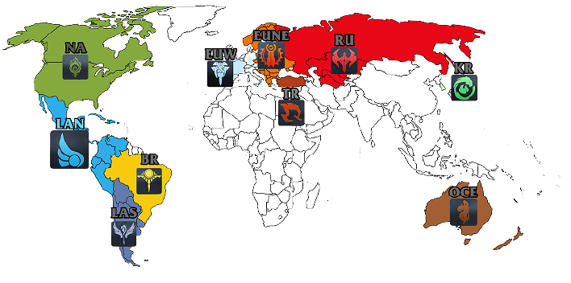

Igrica iako naizgled jednostavna, u stvarnosti je veoma komplicirana, cak i najmanja pogreška moze uvelike preokrenuti igru. Zbog toga se rodio veliki natjecateljski duh, Sjedinjene američke države su prve pokrenule veliko regionalno natjecanje pod nazivom LCS,a kasnije im se pridružila Europa i u konačnici cijeli svijet. Sada tokom godine postoje 4 velika natjecanja:
- Regionalno Proljetno natjecanje 
- Mid-Season-Invitational
- Regionalno Ljetno natjecanje
- Svjetsko natjecanje
Postoji sveukupno 12 natjecateljskih regija:
- Južna Koreja
- Sjeverna Amerika
- Europa
- Kina
- Pacifik(Taiwan,Hongkong,...)
- Brazil
- Oceanija
- Rusija
- Japan
- Latinska Amerika
- Turska
- Vietnam
svaka regija organizira svoje regionalno proljetno/ljetno natjecanje, na Mid-Season-Invitational-u sudjeluju prvo plasirani timovi regionalnog proljetnog natjecanja iz svih regija, dok na svjetskom sudjeluju prva 3 plasirana tima regionalnog ljetnog natjecanja iz svake regije. Gledanost finala svjetskog prvenstva u League of Legends-u 2018. godine bila je 99,6 miliona, što je veća gledanost nego većina svjetski poznatih sportova.